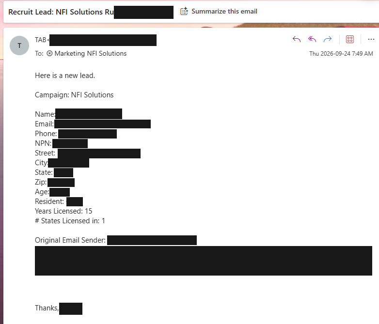
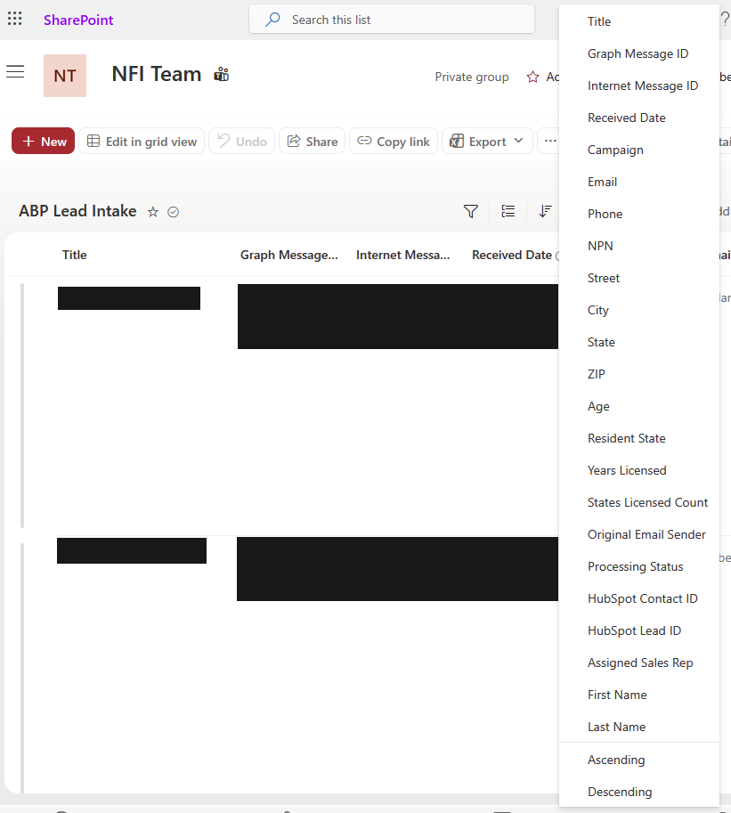
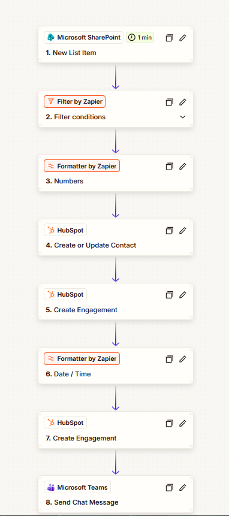
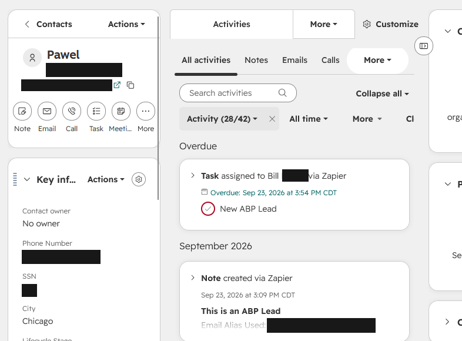
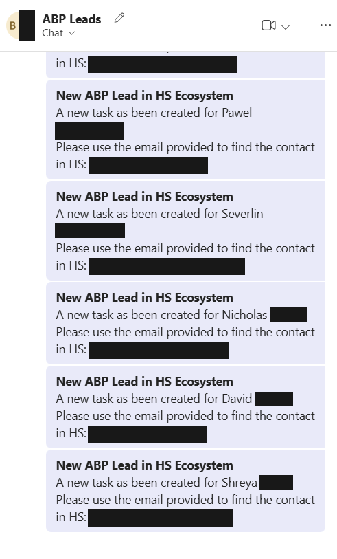
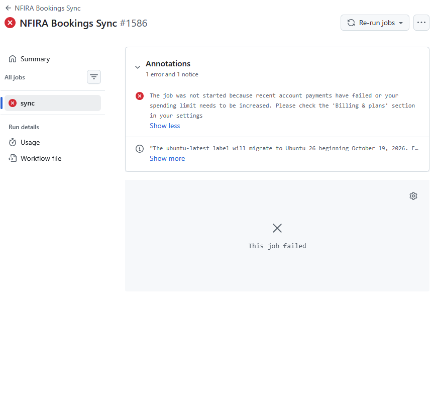
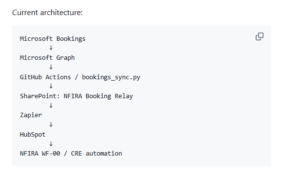

This project addresses vendor lead intake separately from the NFIRA CRE System. Screenshots are redacted to protect personal information. Examples illustrate different stages and are not presented as a matched record trace.
The Problem
NFI Solutions began a trial with ABP, an external email-marketing partner that generates leads and delivers them by email. That inbox wasn't routinely monitored. A lead could arrive, sit there, and never become a usable record. not because anyone dropped it, but because nothing connected "an email arrived" to "someone can act on this."
The gap wasn't receiving the information. It was making it operational: getting it into HubSpot, in a form the CRM and the people responsible for follow-up could actually use, without anyone having to remember to check an inbox.
The trial itself had one job: find out whether ABP consistently delivers useful, high-quality leads. I built the intake pipeline to support that evaluation with the tools the company already had. The decision to continue with ABP would rest on lead quality. not on how smoothly the pipeline ran or how many records it moved.
Matching the Architecture to the Business Need
Before building anything, I compared two paths: Power Automate, or an integration built from tools already in use. For this trial, the existing stack was the right call. it got leads into HubSpot without adding new software during what was explicitly a vendor evaluation, not a platform commitment.
The same integration pattern also supported NFIRA appointment booking. Both processes had modest input volumes, so consolidating around infrastructure already on hand was proportionate to what either one actually needed. That capacity reasoning was separate from, and shouldn't be confused with, the actual question of whether ABP's leads were any good.
The trade-off was real: a longer chain of connections means more points to check when something breaks. I accepted that complexity in exchange for not standing up new infrastructure to evaluate a vendor we might not keep.
I'd revisit Power Automate if volume outgrew the current system and the platform needed to support multiple business functions at once. Those are the conditions that would justify a different infrastructure decision. They're a separate question from whether ABP is worth keeping. that one is answered by lead quality, not pipeline architecture.
Walking the Chain
Six components carry a lead from an inbox to a usable CRM record, each with one job:
| Component | Role |
|---|---|
| Microsoft inbox | Receives the vendor's lead emails, retains the originals |
| Microsoft Graph | Programmatic access to incoming email content |
| Processing program (Python) | Reads the relevant fields, prepares them for the next stage |
| SharePoint | Stores the prepared lead record between processing and downstream automation |
| Zapier | Connects the stored record to HubSpot and the Teams notification |
| HubSpot / Teams | CRM record for follow-up; internal notification for visibility |
ABP data flow: Inbox → Microsoft Graph → processing → SharePoint → Zapier → HubSpot and Teams.
The design work that actually mattered happened at the seams, not inside any one box. The vendor’s email contains structured text fields that need to be extracted and mapped into a CRM record. Getting from one to the other meant deciding exactly which fields to pull out of the email, how to shape them, and where each one needed to land in HubSpot.




Microsoft Graph is the access point into the source. SharePoint is the stable, inspectable record sitting between "processed" and "delivered." Zapier is what actually connects that record to the systems people use day to day. The integration connects these tools through APIs and connectors, with explicit decisions about the data passed between them.

The Teams message is worth calling out on its own. It's not a copy of the CRM record. it's a smaller, faster-to-read version, built around one question: does someone need to notice this right now? Everything that could wait for a proper look in HubSpot stayed out of the notification. That's a real design choice about attention, not just a technical relay.
When the Execution Environment Became the Constraint
The pipeline originally ran on a GitHub-hosted execution schedule. I encountered an account execution constraint and prepared a local alternative. The related NFIRA Bookings run shown below was blocked by a billing or spending-limit condition; the message does not identify which condition applied and is not an ABP run log.

The constraint was in *where* the processing ran, not in what it did or how the downstream systems used its output. Because I'd kept those responsibilities separate from the start, I could address the constraint without touching SharePoint, Zapier, or anything past it. I built a local Python option that feeds the same SharePoint record, leaving every downstream connection untouched.
The system currently runs in the cloud on a 15-minute schedule. The local setup is a deliberate backup for maintenance and cleanup. a way to keep processing running while I make changes upstream. not an automatic failover. I want to be precise about that distinction rather than imply more resilience than actually exists.
Troubleshooting by Design
The original emails stay in the inbox. If a lead doesn't show up where it should, that message is the starting point, and the chain gives a specific path to follow: did processing reach the message, did a record land in SharePoint, did the downstream automation deliver it to HubSpot and Teams. That turns "why is this lead missing" into "which specific connection stopped," which is a much smaller question to answer.
I want to be equally direct about what this doesn't prove. Keeping the source email doesn't establish automatic recovery, and it doesn't guarantee a missed message gets reprocessed on its own. Duplicate handling and recovery from a missed run haven't been verified through an actual test or a real incident yet. I'm not going to present either as a confirmed safeguard until I've actually tried to break it and watched what happens.
What This Reused, Elsewhere
The same pattern also supports NFIRA's appointment-booking integration. a different source event, feeding the same kind of pipeline into the same operational tools. That's a separate case study; I'm noting it here only because it's evidence the architecture decision above wasn't a one-off, it was a repeatable answer to "how do I get an external event into tools people already use."

What the System Achieved, and What It Hasn't Yet Proven
The pipeline connects vendor lead emails to HubSpot and internal notifications, closing the specific gap that started this project: an inbox nobody was watching. It also produced a working local-execution fallback and a pattern I reused elsewhere. Those are concrete.
What I haven't established: measured time saved, a confirmed reduction in lost leads, or total cost of ownership against the alternative. I'd want real numbers before claiming any of those.
Evaluating Success the Right Way
The business question was never "did the pipeline run smoothly". it was "does ABP send us leads worth having." The integration's job is narrow: get what arrives into a form someone can act on. Whether ABP is worth continuing is a lead-quality judgment, made by the people following up on those leads, not a property of how well the pipeline moved data.
The technical evaluation is a separate, still-open task: I'd want to actually test duplicate handling and recovery from a missed run before calling either one reliable. That's a check on the integration's own soundness. it has nothing to do with whether ABP itself is a good vendor.